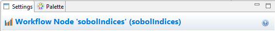

Next-Gen Workflow Node Glossary
For any node not listed in the glossary below, you can open that node’s documentation by opening the Settings editor view for that node, and then clicking on the small “?” button to the right of the Settings editor banner:
Blackbox
Dakota
“Data Visualization (Chartreuse)”
“Data Visualization (Dakota/Chartreuse Simple Plots)”
- hdfTraceBarChartPartialCorrelation
- hdfTraceBarChartPartialRankCorrelation
- hdfTraceBarChartSimpleCorrelation
- hdfTraceBarChartSimpleRankCorrelation
- hdfTraceBoxPlot
- hdfTraceContour
- hdfTraceHeatMap
- hdfTraceHeatMapPartialCorrelation
- hdfTraceHeatMapPartialRankCorrelation
- hdfTraceHeatMapSimpleCorrelation
- hdfTraceHeatMapSimpleRankCorrelation
- hdfTraceHistogram
- hdfTraceScatterPlot2d
- hdfTraceScatterPlot3d
- hdfTraceSurfacePlot3d
- scatterPlotMatrix
- sobolIndices
- variablePdfVisualizer